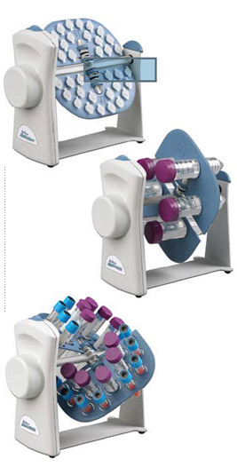

Tube Tumbler Rotator
Useful for a variety of applications, from gentle
rotating to end over end tumbling and everything in
between, the Tube Tumbler is a product that every
laboratory needs.
The unique design of the Tube Tumbler allows it to be
used in either a horizontal or vertical plane with a
simple twist of the rotisserie plate. Each rotisserie
consists of two moveable plates and a support rod.
When the plates are perpendicular to the rod, a
gentle rotating motion is created - tubes rotate
parallel to the axis. When the plates are moved
parallel to the axis, tubes move end over end. The
plates can be placed at any position in between for
more or less vigorous mixing, and are independent of
each other allowing them to be placed at different
positions. In addition, the plates are removable and
can be interchanged with the plates from other
rotisseries, allowing different tube sizes to be mixed
at the same time.
Operating speed is fixed at 18* rpm. The unit is
supplied complete with a rotisserie for 36 x 1.5/2.0
ml tubes. Optional rotisseries accept 5 ml, 7 ml, 15
ml and 50 ml tubes.
The sturdy construction of the Tube Tumbler stands up
to constant use, yet the unit is light enough to be
easily moved. the Tube Tumbler is safe for operation
in temperature controlled environments from +4 to
65ºC. |
Specifications
Speed range
18 rpm at 120V/60 Hz
20 rpm at 230V/50 Hz
Motion
Rotating
Ambient Operating Range
+4º to 65ºC
Dimensions: (W x D x H )
23.9 x 12.7 x 15.3 cm
9.4 x 5 x 6 in.
Weight :
2.0 kg/5.5 lb
Electrical:
120V or 230V, 50/60 Ha
Ordering Information
SBS550 Tube Tumbler Rotating Mixer, with 36 x 1.5/2.0 ml rotisserie assembly, 120V
SBS550-2 Tube Tumbler Rotating Mixer, with 36 x 1.5/2.0 ml rotisserie assembly, 230V. EU power cord
SBS550-3 Tube Tumbler Rotating Mixer, with 36 x 1.5/2.0 ml rotisserie assembly, 230V, UK power cord
SBS550-15 Rotisserie assembly for 10 x 15 ml (16 mm dia) tubes, and 16 x 5/7 ml (12 - 13 mm dia) tubes
SBS550-10 Rotisserie assembly for 36 x 1.5/2.0 ml tubes (one supplied with unit)
SBS550-50 Rotisserie assembly for 6 x 50 ml tubes
|
 |